Together with your friends you play as adorable cats on a mission through a dangerous desert wasteland in your giant robot walker, shooting down monsters and collecting keys to make your way to the oasis.
My main responsibility was to create a system for generating levels procedurally, ensuring each playthrough offered unique challenges and experiences. Here is the end result:
The game is based off of Lovers in A Dangerous Spacetime made by Asteroid Base. My generation was based off of the original levels. However, in the end my designers settled on a smaller map size — other than that the levels look similar. Left the original, right my version.
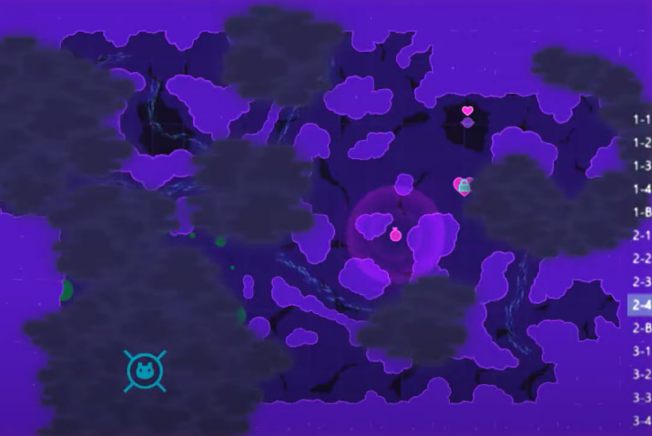
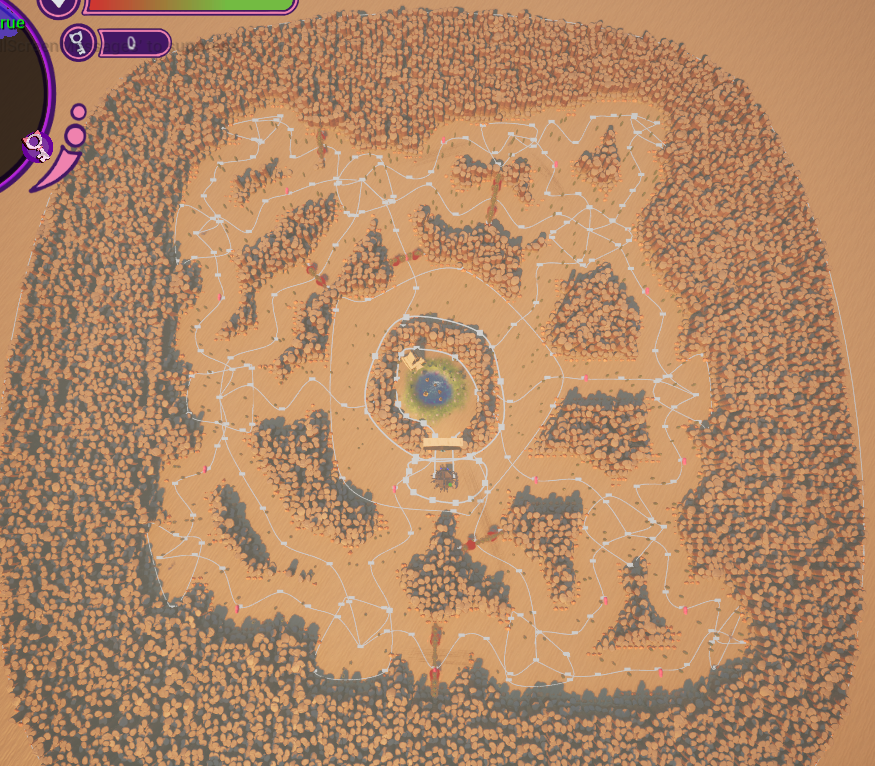
Below you can see the original design sketch I created together with my level designer based on the original game. The more open dune areas got scrapped early on but the similarities and differences between the cave sketch and the final product are very interesting to me. The original sketch had more open areas and less corridors, but the final version ended up being more focused on tight, chaotic corridors.
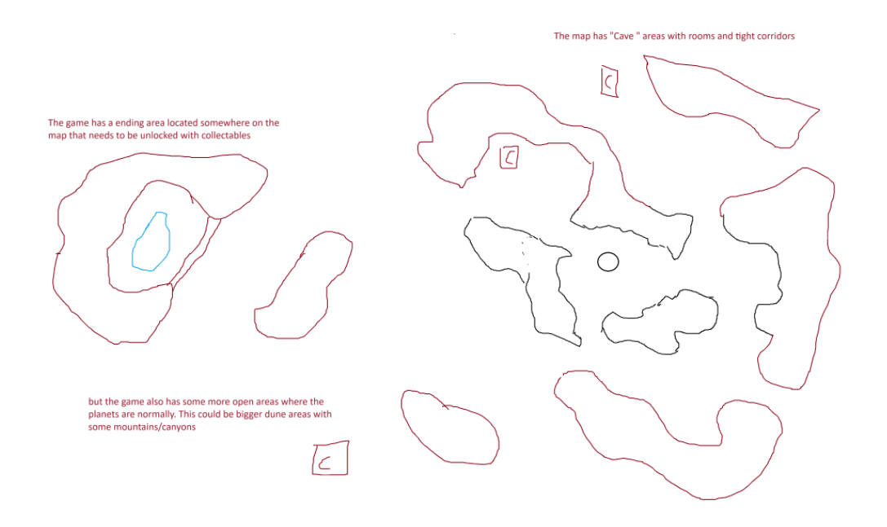
The first step is placing seed points that will become the rooms. Points are placed randomly but validated against all existing points to ensure a minimum distance between them. The centre point, which is always the oasis endpoint, has a larger exclusion radius to protect it's setdressing. If no valid position is found after 50 tries, the closest valid position is used anyway.
do {
count++;
distance = std::numeric_limits<float>::max();
worldPosition = FVector2D(RandomRange(mMapWidthX), RandomRange(mMapWidthY));
for (int j = 0; j < mRoomPositions.Num(); j++) {
float newDistance = worldPosition.Distance(mRoomPositions[j], worldPosition);
if (j == 0) distanceToMiddle = newDistance; // centre has a bigger exclusion radius
else if (newDistance < distance) distance = newDistance;
}
viablePosition = true;
if (distance < mRoomMargin) viablePosition = false;
if (distanceToMiddle < mMiddleRoomMargin) viablePosition = false;
} while (!viablePosition && count < 50);GenerateRoomPoints() — ProceduralWorldGenerator.cpp
The map structure starts with a Voronoi diagram. I generate this using Fortune's algorithm, which I implemented myself in a standalone C++ project first to ensure I had a solid understanding of the algorithm. Fortune's algorithm visualisation (left): Wikimedia
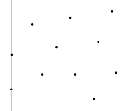
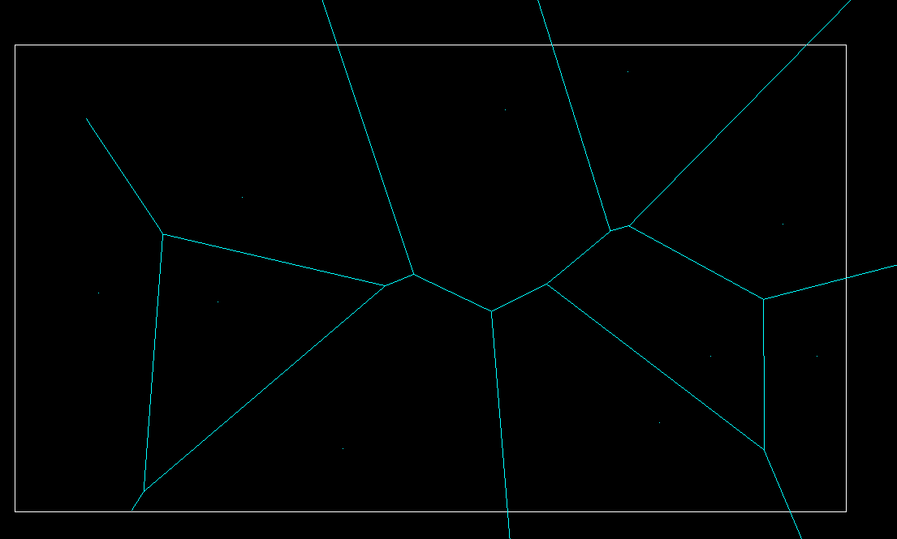
Fortune's algorithm works by sweeping a vertical line across all the seed points from left to right. As the sweep line passes each point, a parabola expands outward from it. Where two parabolas meet, they trace a Voronoi edge. When three parabolas converge at a single point, that is a Voronoi vertex.
After I had a working prototype in C++, I ported it to Unreal Engine. The green lines below represent the Voronoi edges. The grey boxes are the seed points.
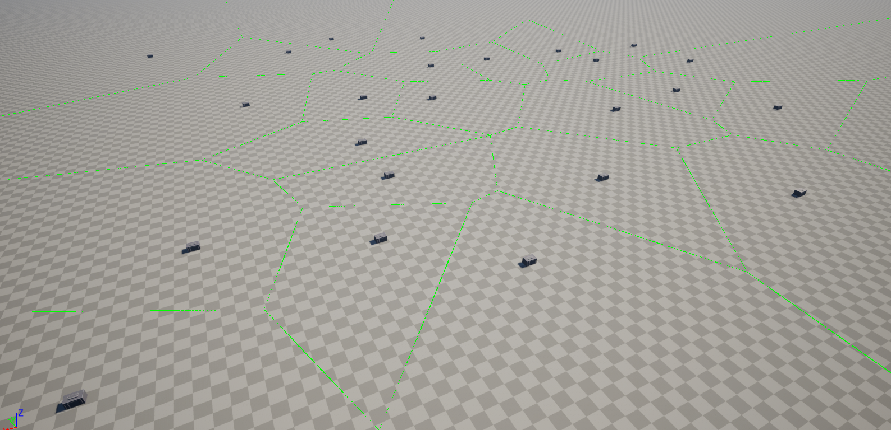
The Voronoi diagram is converted to a Delaunay triangulation by connecting each pair of seed points whose Voronoi regions share an edge. These connections become the corridors of the level. Initially the triangulation produced stretched triangles at the edges because some Voronoi edges extend to infinity — adding a bounding box fixed this. The red lines represent the Delaunay triangulation edges.
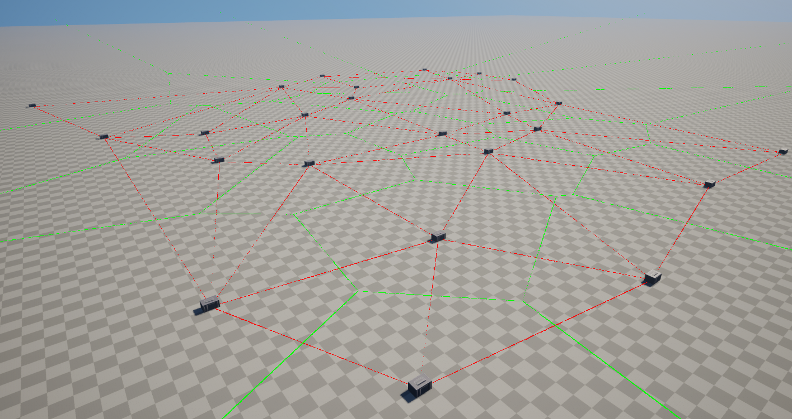
I then use the Delaunay triangulation to cut out corridors using splines and Unreal Engine's PCG system.
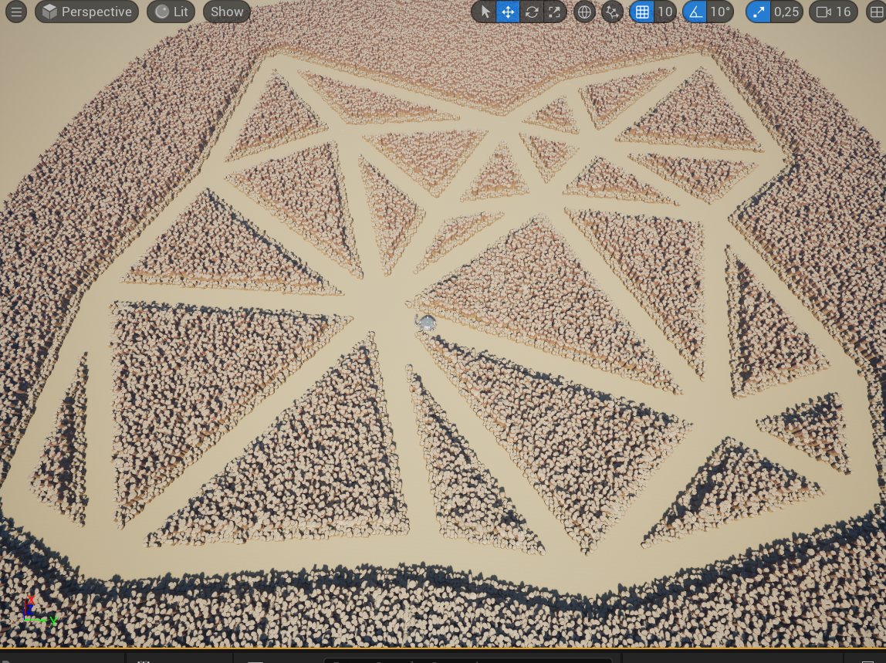
To make the corridors more interesting, I add intermediate spline points with random perpendicular offsets and random widths. The sign flip ensures offsets go left or right randomly rather than always the same direction.
// get the perpendicular direction for offsetting corridor points
FVector2D site1 = delaunayTriang[i]->site1;
FVector2D site2 = delaunayTriang[i]->site2;
FVector splineDirection = FVector(site1, 0) - FVector(site2, 0);
splineDirection.Normalize();
FVector splineRightAngle = FVector(splineDirection.Y, -splineDirection.X, 0);
for (int segmentIndex = 0; segmentIndex < mNumberOfCorridorSegmentPoints; segmentIndex++) {
FVector position = LerpVector(FVector(site1, 0), FVector(site2, 0),
mNumberOfCorridorSegmentPoints, segmentIndex);
if (segmentIndex != 0 && segmentIndex != mNumberOfCorridorSegmentPoints - 1) {
// random left/right offset — sign flip ensures both directions are possible
float sign = (static_cast(RandomFloat() * 10) % 2) == 0 ? 1.0f : -1.0f;
float offset = sign * mMinCorridorSquiggleOffset
+ RandomFloat() * (mMaxCorridorSquiggleOffset - mMinCorridorSquiggleOffset);
position += (offset * splineRightAngle);
}
newSpline->AddSplinePoint(position, ESplineCoordinateSpace::Local, false);
// random width per segment
newSpline->SetScaleAtSplinePoint(segmentIndex,
FVector(mMinCorridorWidth + RandomFloat() * (mMaxCorridorWidth - mMinCorridorWidth)), false);
} SpawnPathSplines() — ProceduralWorldGenerator.cpp
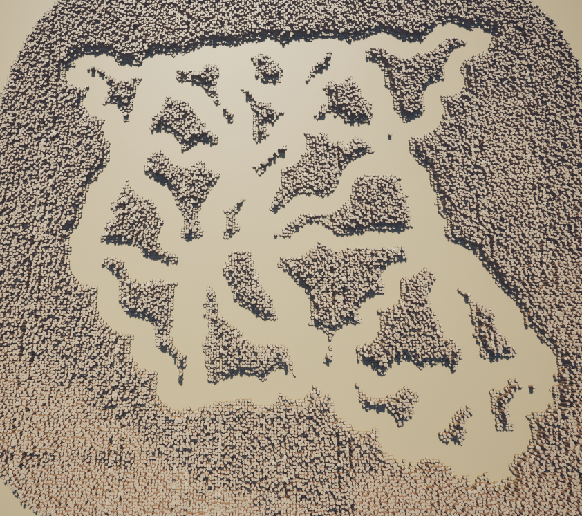
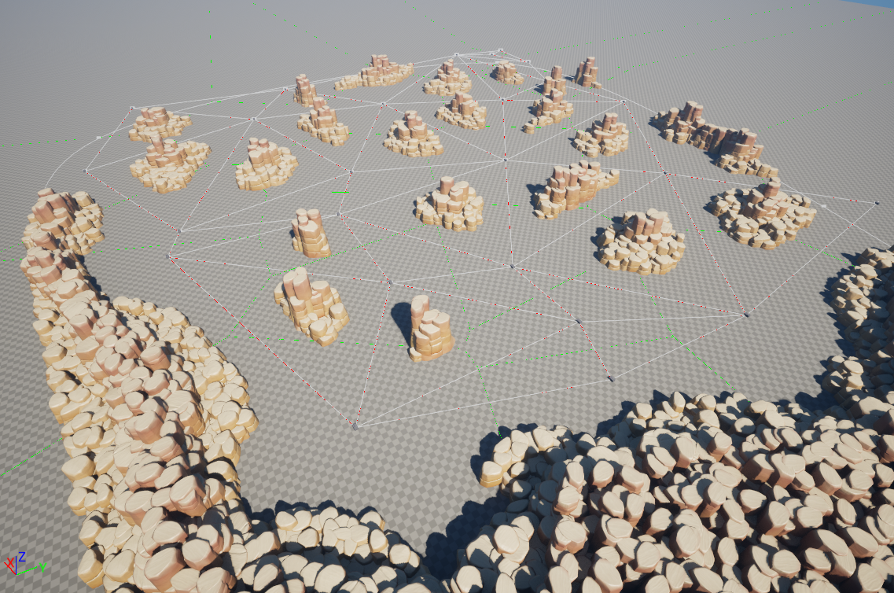
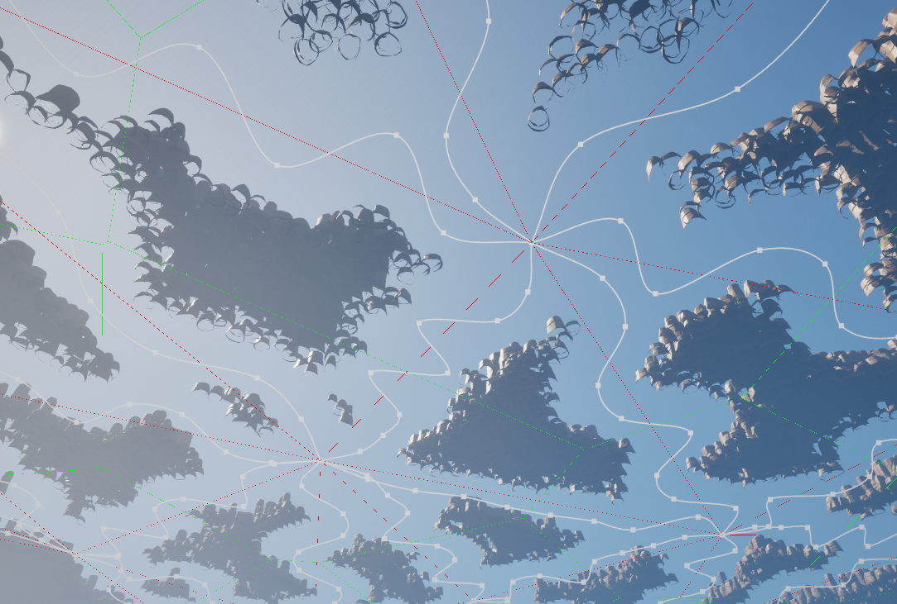
Open rooms are carved out at a random selection of Voronoi sites. The room boundaries are derived from the Voronoi edges surrounding each site, guaranteeing rooms can never overlap each other. Getting those edges to sort into a valid closed polygon was the hardest part of the whole system. Since Fortune's algorithm finds corner points ordered left to right rather than relative to their seed location, I had to handle over ten edge cases involving edges that extend to infinity, disconnected boundary patches, and keeping the winding order consistent. Not every site becomes a room — skipping some keeps the level less predictable.
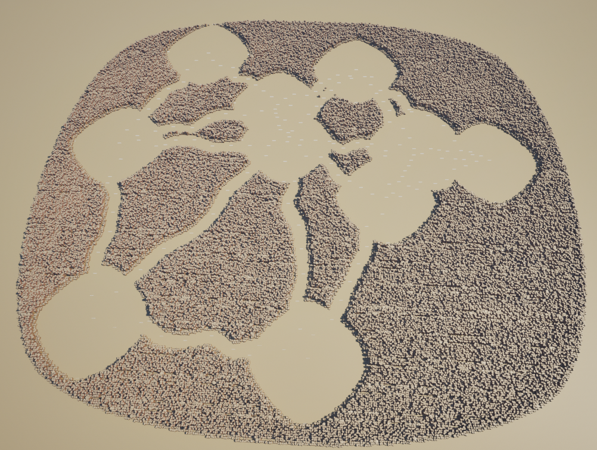
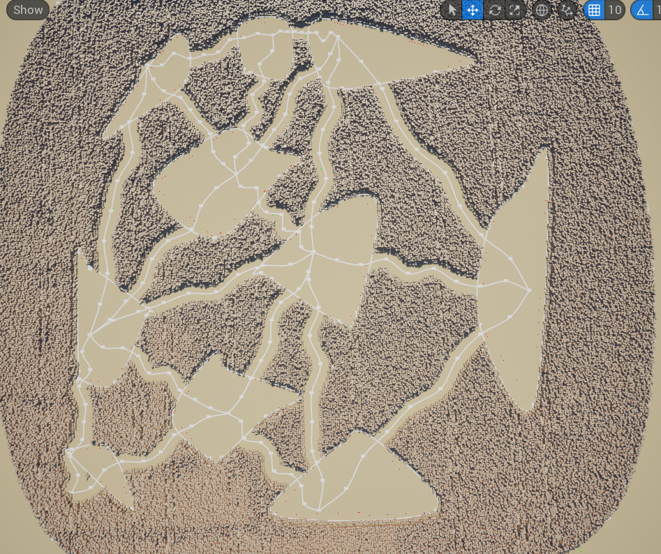
The image above was actually closer to what we originally aimed for. However, while playing around with the values we discovered that shorter, crazier corridors were a lot more fun and interesting. The open and chaotic nature matched the gameplay perfectly. The adjustable nature of my algorithm ended up steering the direction of the entire game.
Just like the hallways I ended up adding offsets to make the room shapes more organic and interesting.
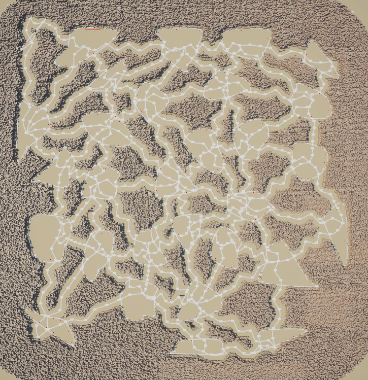
Besides the level generation, I also implemented systems to place different obstacles within the generated environment.
Before I could place any obstacles however, I needed to wait for the canyon geometry to be in place. The canyon rock placement runs asynchronously on a separate thread via the PCG plugin. I bound a callback to the PCG component's completion event so obstacle/object spawning only starts once the geometry is in place. Without this, collision checks for cactus placement would find nothing to collide against.
// wait for the PCG plugin to finish placing canyon rocks before spawning hazards
PCGComponent->OnPCGGraphGeneratedExternal.AddDynamic(
this, &UProceduralWorldGenerator::GenerateWorldAfterPCG);
PCGComponent->Generate_Implementation(true);
void UProceduralWorldGenerator::GenerateWorldAfterPCG(UPCGComponent* PCGComponent) {
SpawnCactiWalls();
SpawnCacti();
SpawnSandStorm();
CleanUp();
}CreateWallZones() / GenerateWorldAfterPCG() — ProceduralWorldGenerator.cpp
The simplest hazard. Cacti can be destroyed by shooting them and explode on death, damaging players, enemies and other nearby cacti. They can spawn anywhere on the map as long as they don't overlap with the player spawn or canyon walls. A single slider in the editor controls how many spawn.
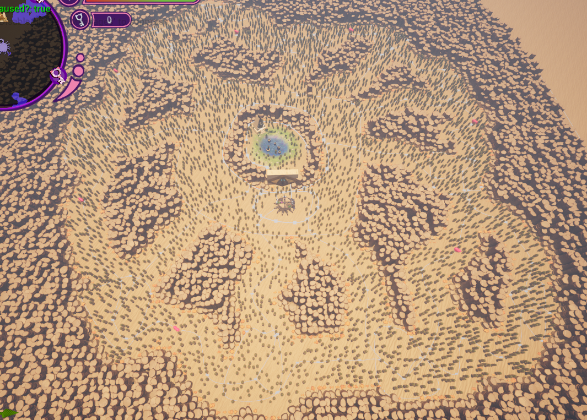
The cactus wall blocks an entire hallway. To size it correctly I needed the actual width of the corridor at the spawn point, but spline scale alone underestimates this because curves remove extra canyon on the inside of bends. Instead I start with the expected width and ray-march outward from the spline centre in both directions using Unreal's box trace until hitting canyon geometry. If either side exceeds the maximum wall length the position is rejected and a new one is tried.
// march outward from corridor centre in both directions until hitting a wall
while (!IsSpaceOccupied(
middlePoint.OutVal + basePerpendicularVec
+ (perpendicularVec * middlePointScale.OutVal * stepSize * marchDistance1)
+ FVector(0, 0, 100), extent)
&& marchDistance1 < maxMarchStep) {
marchDistance1++;
}
while (!IsSpaceOccupied(
middlePoint.OutVal - basePerpendicularVec
- (perpendicularVec * middlePointScale.OutVal * stepSize * marchDistance2)
+ FVector(0, 0, 100), extent)
&& marchDistance2 < maxMarchStep) {
marchDistance2++;
}
if (marchDistance1 < maxMarchStep && marchDistance2 < maxMarchStep) {
// valid width found, spawn the wall between the two hit points
} else {
// wall would be too long, reject and retry
currentCactiWallNumber--;
}SpawnCactiWalls() — ProceduralWorldGenerator.cpp
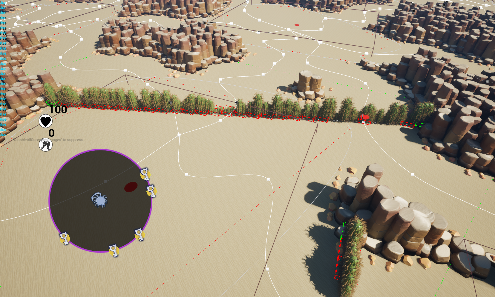
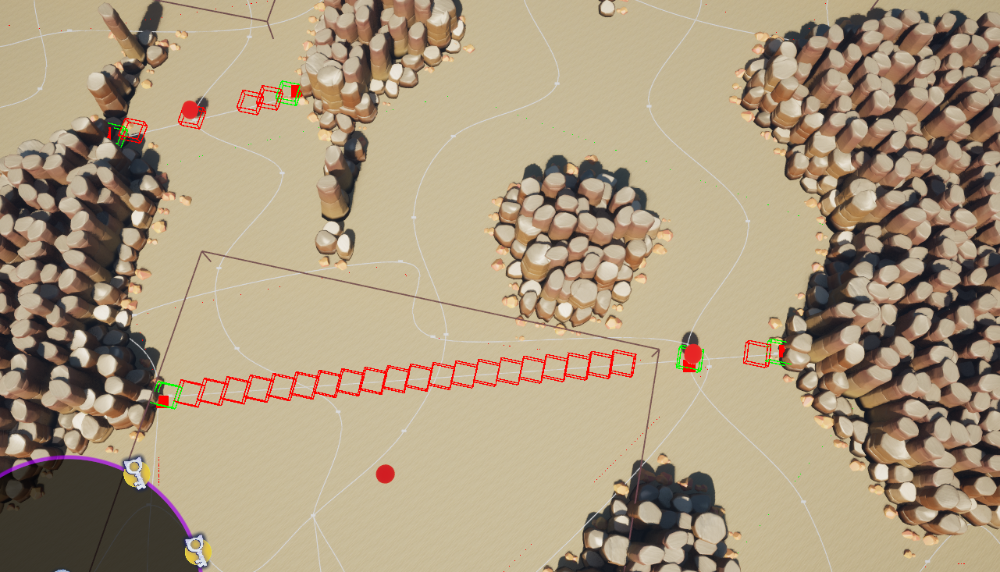
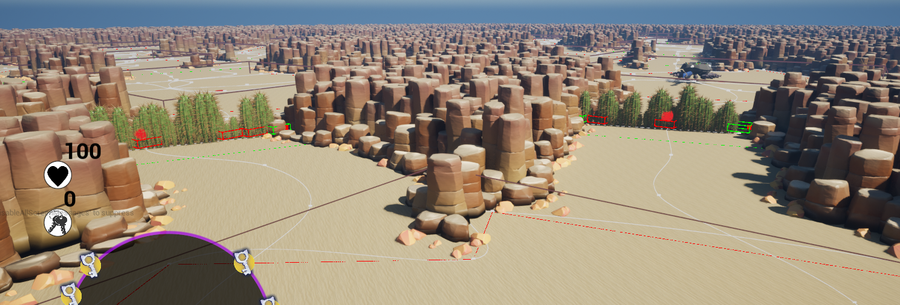
I worked together with fellow developer Timethy to implement enemy spawning into the level. After some discussion we decided they should spawn once the player enters a room but also be able to spawn behind the player to force them to switch guns and cause more panic. To do this I created trigger boxes slightly smaller than the rooms themselves, which hook up to the spawner system.
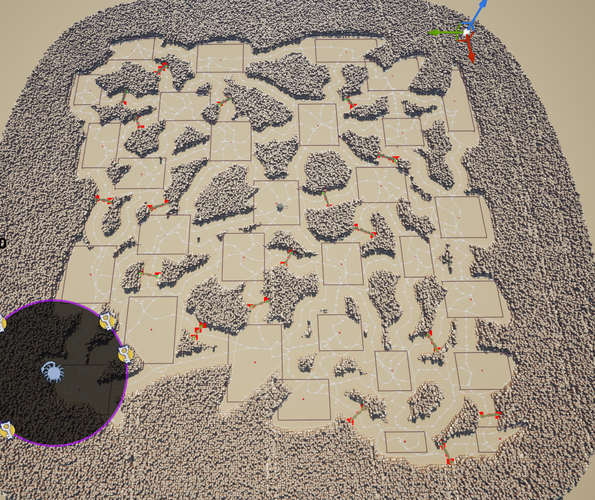
Sand storms push players in one direction, creating one-way corridors in the map. These are placed at the midpoint of a random corridor using the angle between the two connected room positions, which turned out to be robust enough for the narrow corridors we ended up shipping.
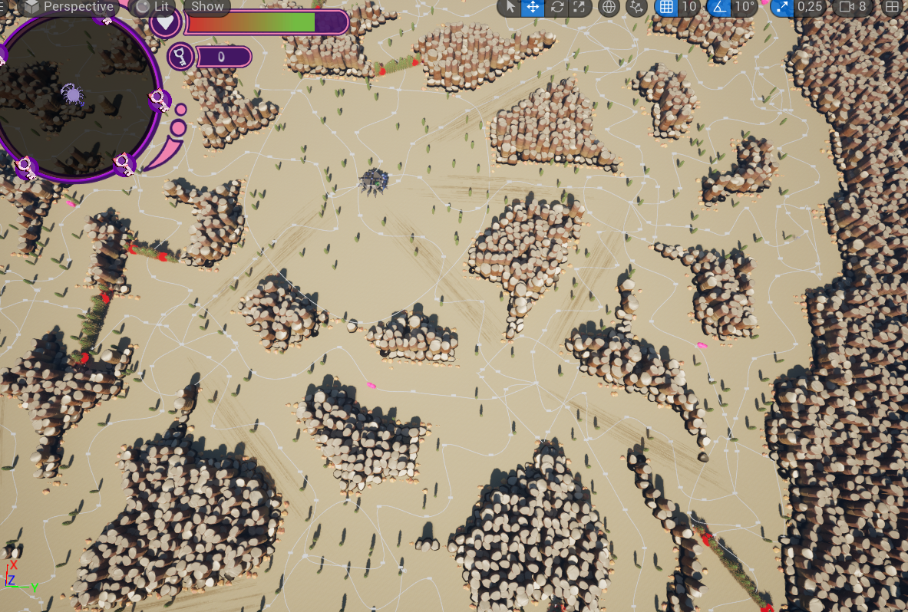
Keys and health pickups use the same random-with-validation approach as room placement. Keys are chosen from room midpoints with a minimum distance between them to ensure they spread across the map. Health pickups are placed at corridor midpoints instead, so players encounter them while navigating between rooms.
do {
count++;
distance = std::numeric_limits::max();
// pick a random room midpoint as the candidate spawn location
worldPosition = roomMiddlePoints[static_cast(RandomFloat() * roomMiddlePoints.Num())];
// reject if too close to any already-chosen key location
for (int j = 0; j < chosenLocations.Num(); j++) {
float newDistance = worldPosition.Distance(chosenLocations[j], worldPosition);
if (newDistance < distance) distance = newDistance;
}
} while (distance < mKeyRadius && count < 100);
chosenLocations.Add(worldPosition);
pWorld->SpawnActor(keyClass, worldPosition, FRotator::ZeroRotator); SpawnKeys() — ProceduralWorldGenerator.cpp
The level generation relied heavily on close collaboration with Nataliia, our technical artist. Her PCG tool placed varying sizes of rocks depending on the sample location values. This meant that around the edges of an area, or where a corridor was cut out, there would be smaller rocks that got increasingly bigger as they got further away. We had both not used the PCG system before, so it took some experimentation before landing on this solution. Our first idea was to use Houdini but sadly we couldn't manage to run the Houdini Engine plugin at runtime, which would be necessary to make each level unique.
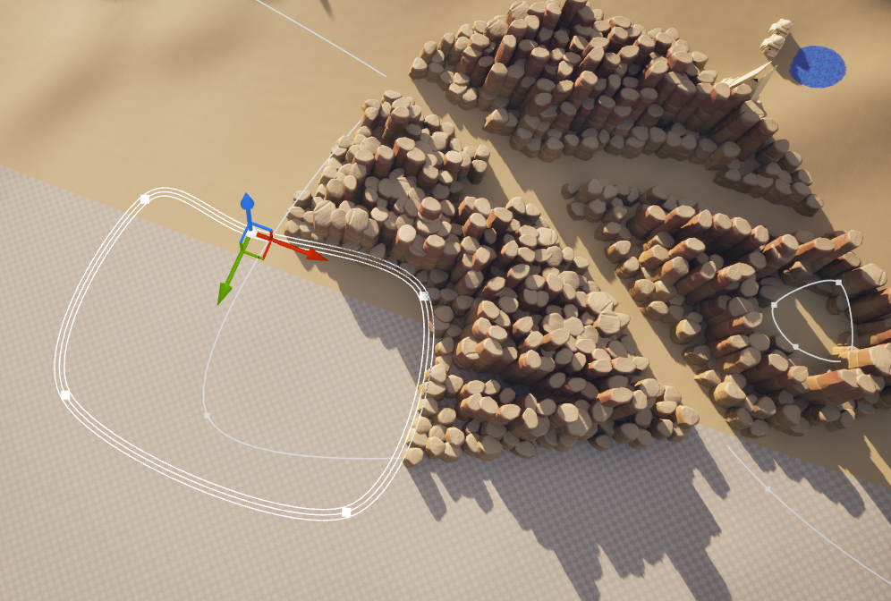
Besides the technical artist, I also worked closely with level designer Abel. I had regular meetings with him to discuss the direction of the level generation and to see if my final product aligned with the project's needs. Through a lot of valuable iteration we ended up with a system that produces levels that are chaotic and fun to play in, while still being adjustable enough to steer the direction of the game.
Next to this I worked together with fellow developers whenever someone was stuck, and gave feedback to our artists whenever they shared their progress. Overall, the collaboration within the team made sure everyone was aligned and resulted in a great team atmosphere.
This was by far the biggest procedural generation project I had worked on up until now. Throughout the process I noticed that the more controls I added to the system, the more fun and interesting results appeared. And when these results started coming in, designers got more invested in the system and feedback and iteration started snowballing into a much better product.
At the start of our project we had created teams based on our disciplines.
This worked alright but it didn't feel like we were really one team, and efficiency suffered because of it.
For the second sprint and onwards we switched to cross-disciplinary teams,
where each team had a mix of programmers, artists and designers.
We based the teams on the general features we would be working on.
Meaning I was suddenly surrounded by artists and designers also working on the level.
This made communication and iteration much easier and faster, and it also made the project a lot more fun to work on.
A few times I would hear requests or feedback through other people. But when I asked the person directly about it, I heard completely different requirements or feedback. Instead of playing a game of telephone within the team, I learned that it's much better to just ask the person directly.
From the start of the project it was clear that my plan for the procedural generation was quite ambitious for an 8 week project.
To combat this I made sure to have a working prototype of the core algorithm within the first 2 weeks.
If I could not get that working, I would have had to switch to a much simpler algorithm.
Besides this we also never planned to have the procedural levels be the core of the game.
Our level designer worked on one hand-crafted level in parallel,
so if the procedural generation ended up being too much for the time we had, we could just use that.
And crucially during the whole process I made sure to communicate with the team about the progress and any potential issues.
This made sure the team was always aligned and we could make informed decisions together whenever we needed to.
Luckily, it all worked out on time in the end.
And from playtesting we even found that the procedural generation ended up being more fun than the hand-crafted level,
which was a great bonus. In the end we turned the hand-crafted level into the onboarding level and ended up with a great finished game.
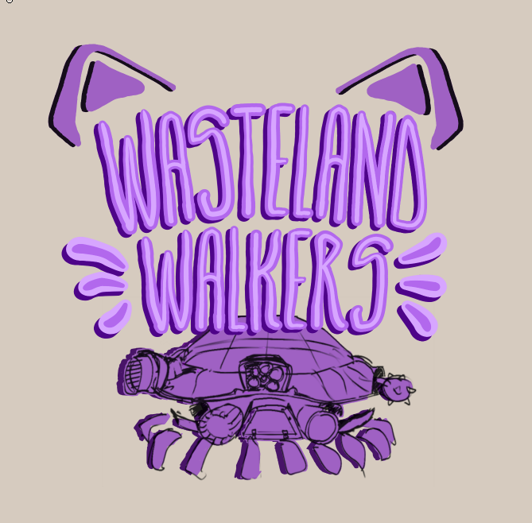